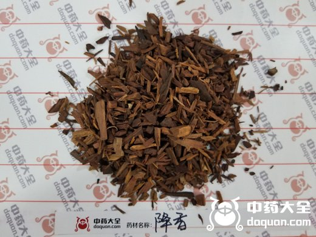
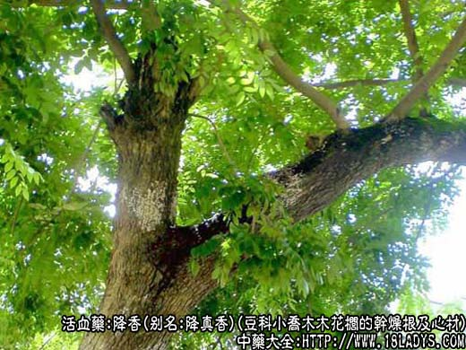
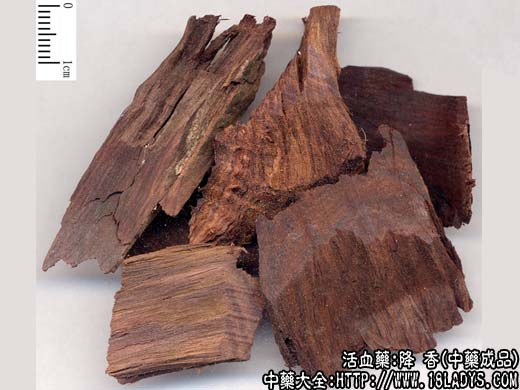
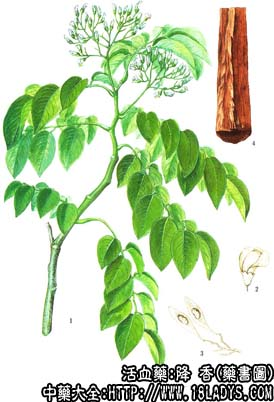

降香为少常用中药。始载《证类本草》。《本草纲目》名降真香，列入木部香木类。过去均为进口，现市售商品，主要为国产的花榈木。
别名：降真香、紫降香。
来源：为豆科植物小乔木花榈的干燥根及心材。野生。
产地：主产于广西海南岛。此外，云南、四川、贵州、福建等地亦有分布。
性状鉴别：商品均已削去外皮，断截成15~30厘米的段块。表面紫棕色或暗红紫色，有刀削痕和纵直细纹，多较光滑。质坚硬，体重。微有香气，点燃后较浓，烧后留有白灰，味微苦。以紫红，坚硬，香气浓者为佳。
主要成分：含挥发油。
功效与作用：理气镇痛、行瘀止血。实验证明降香能显著缩短家兔血浆再钙化时间。
炮制：镑片或劈碎。
性味：辛，温。
归经：入心包，肝经。
功能：行瘀止血、消肿止痛。
主治：金疮出血，跌打损伤，疼痛，瘀血肿痛等症。
临床应用：1、用于跌打损伤。凡有瘀血停滞作痛，或体内、体外出血（不甚严重者），都可应用。常配乳香、没药、三七、自然铜等制成丸、散（研成极细末）内服或外敷，能止血生肌、镇痛。
2、用于理气化瘀止痛，功用大致与檀香相同，故可用子代替檀香治疗真心痛（冠心病引起的心绞痛），常配活血药同用，方如冠心二号方。据观察，本方治冠心病疗效较好，能减轻症状。
使用注意：脉实便秘、阴虚火盛、血热妄行者均忌服。
用量：研末冲服2.4~3g；入煎剂用3~6g。
处方举例：冠心二号方（北京地区防治冠心病协作组）：降香15g，丹参30g，赤药15g，川芎15g，红花15g，作冲剂，每日一剂，分三次冲服，一疗程四周，可连续用三疗程。
注：1、过去进口的降香，为芸香科植物降真香树的心材。产自印度、越南、泰国、菲律宾等地，我国广东、广西、云南虽有分布，但未供药用，其性状与现用之花榈木相似，唯质较重，纹理致密、色紫而润，气香浓而味辛辣。
2、豆科植物紫檀树亦名花榈木，我国广东、云南南部有分布，其心材也可作降香药用。性状与花檀木近似。